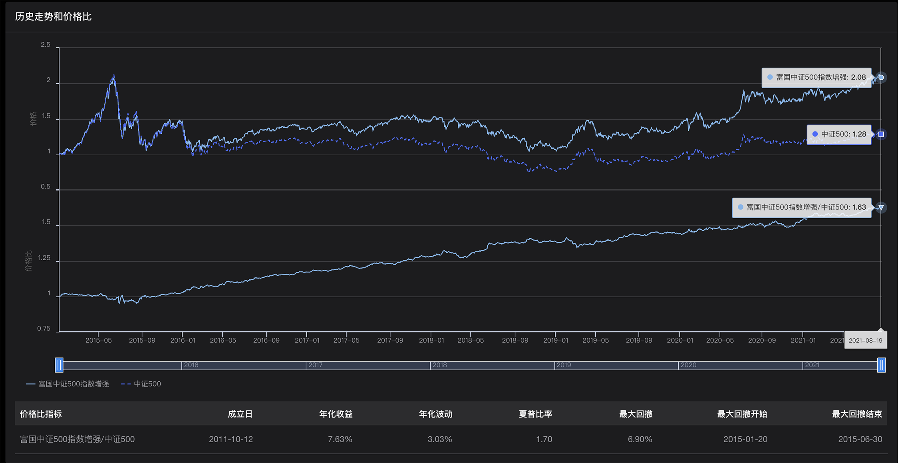
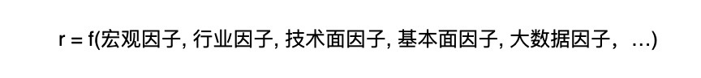

- 00 开篇词 为什么说程序员最适合学财富管理？.md.html
- 01 财富框架：建立属于你自己的财富双塔.md.html
- 02 个人发展：你自己的发展才是最大的财富源泉.md.html
- 03 理财金字塔：如何建立稳固的投资理财结构？.md.html
- 04 实战知识：有哪些收益稳健的经典资产配置组合？.md.html
- 05 支点投资法：主动投资是讲逻辑的！.md.html
- 06 不当韭菜：在财富管理的过程中摆正心态，知己知彼.md.html
- 07 职业方向：如何选择一个有前景的职业方向？.md.html
- 08 职业规划：大公司VS小公司，怎样选择更有前途？.md.html
- 09 期权股权：如何正确处理公司的期权、股权？.md.html
- 10 跳槽涨薪：如何规划一条合理的职业道路？.md.html
- 11 财富拓展：35岁失业？程序员如何拓宽财富渠道？.md.html
- 12 房产投资：如何做出理性的买房决策？.md.html
- 13 实战知识：让我们编程计算下怎么还房贷最合适.md.html
- 14 基金投资：如何让专业人士帮你赚钱？.md.html
- 15 实战知识：如何选出一只优质的基金？.md.html
- 16 股票投资：最适合散户的股票投资方法是什么？.md.html
- 17 投资闭环：如何成为越来越专业的投资者？.md.html
- 18 技术优势：程序员如何用技术超越其他投资者？.md.html
- 19 量化投资：典型的量化投资系统都包含哪些模块？.md.html
- 20 价值投资：永远不过时的中长期投资策略.md.html
- 21 趋势跟踪：怎样跟着趋势一起赚钱？.md.html
- 22 轮动策略：如何踩准市场变换的节奏？.md.html
- 23 对冲思想：这个世界上有稳赚不赔的生意吗？.md.html
- 24 多因子模型：整合不同策略，形成合力的顶层框架.md.html
- 25 机器学习：我们能用机器学习来建立投资模型吗？.md.html
- 26 量化实战：从0到1搭建起一套简单的量化投资系统（上）.md.html
- 27 量化实战：从0到1搭建起一套简单的量化投资系统（下）.md.html
- 番外一 王喆对话李腾：程序员对基金经理的灵魂十问（上）.md.html
- 番外三 有哪些能够持续学习的参考资料和相关网站？.md.html
- 番外二 王喆对话李腾：程序员对基金经理的灵魂十问（下）.md.html
- 番外四 知识总结：这门课的全部思维导图.md.html
- 答疑课堂（一） 财富框架篇、个人发展篇思考题集锦.md.html
- 答疑课堂（二） 投资实战篇、投资进阶篇思考题集锦.md.html
- 结束语 知行合一：财富管理是一生的事情.md.html
- 捐赠
24 多因子模型：整合不同策略，形成合力的顶层框架
你好，我是李腾。今天这一讲，我们来学习多因子模型。
前面几讲，我和王喆介绍了各种各样的投资策略，每一种策略都有不同的投资逻辑，它们利用的投资信号也各不相同。既然这些策略各有各的优势，那有没有一种更顶层的策略，能把它们都整合起来，形成合力呢？当然是有的，它就是我这一讲要介绍的多因子模型。
在我的眼中，多因子模型是量化投资中最重要的模型。我这样说有两个原因。第一个原因，是我认为能否熟练使用多因子模型，是区分量化投资高手和初学者的一个重要分界线；第二个原因，是多因子模型蕴含着量化投资的一整套核心思想。这套思想具有很普遍的指导意义，即使你做的不是量化投资，它也能在你最迷惑的时候，帮你拨开迷雾，给你指出明路。
接下来，就让我们正式进入多因子模型的学习，搞清楚什么是多因子模型，以及它蕴含的量化投资核心思想。
到底什么是多因子模型？
我们生活的世界是很复杂的，任何一件事情，如果你想做好，就要考虑影响它的各种因素。举个简单的例子，如果你想保持身体健康，那不光要锻炼身体，还得吃得健康，睡觉时间也要合理。这就是一个典型的受多因子影响的问题，只有同时控制好多个变量，才更有可能达到你想要实现的目标。
投资也是一样的。举几个例子来说吧。大家都知道的龙头白马股，基本面确实好，但是估值往往过高。只看估值的话也不行，因为有些估值低的股票，可能所在的行业已经是夕阳行业了，比如被单晶硅淘汰的多晶硅行业。
这时候可能有同学想问了：很多人都说，中国股市是一个政策市，政策对股市的影响实在太大了，我们能不能只根据利好政策来炒股呢？对此我的回答是，政策当然是影响股价的关键因子，但在关注政策变化的同时，你还应该考虑其他很多因素，才能准确做出判断。例如这个利好政策是超出预期，还是低于预期，也就是说这个政策变化的影响是不是已经提前反映在股价里了。只有这样，才能提高你根据政策来预测股价走势的准确度。
总之，股价未来的走势肯定是由多种因子共同决定的，每种因子实际上都代表一种投资股票的底层策略。要把如此多的因子整合在一起，发挥出最大的作用，就需要我们构建一个具有坚实数学基础的模型，这个模型就是我们说的“多因子模型”。
在股票预测中，有哪些常用的因子？
上面，我已经用例子解释了什么是多因子模型。那么，在进行股票预测时，有哪些在多因子模型中经常使用的因子种类呢？
这里我大致梳理了一下，常见的因子种类包括宏观因子、行业因子、技术面因子、基本面因子、大数据因子等等，至于它们的具体数量就更多了。你应该还记得，我在 19讲 介绍过一家国际知名的量化投资机构，它挖掘出的有预测能力，还有一定差异化的技术面因子就有100多万种。不过，我们当然没有必要全部了解所有具体的因子，只需要清楚每个因子类别的含义就可以了。接下来，我就对上面提到的5种常见的因子种类做个具体介绍。
宏观因子
宏观因子主要描述了股票对一些宏观变量的敏感性。最常见的宏观因子是贝塔值，它反映的是股票对股票指数的敏感性。一只股票的贝塔值，你可以简单理解成该股票涨跌幅相对于股票指数涨跌幅的倍数。比如说，一只股票对股指的贝塔值是1.2，那就意味着当指数上涨1%的时候，这只股票平均要上涨1.2%；如果股指下跌2%，那这只股票平均下跌2.4%。
还有一些常见的宏观因子，比如股票对油价的敏感性，股票对汇率的敏感性，等等。
行业因子
行业因子代表了一只个股对相关行业的从属关系。A股市场的股票，一般被划分成约30个一级行业，因此一只个股至少有30个行业因子。
股票对各个行业因子的因子值，我们通常只取0或1，取1表示股票属于该行业，取0表示不属于该行业。当然，在更细致的量化投资中，我们往往会自定义更加细化的行业分类，因子的数值也可以根据相关性的高低取连续值，这就要看我们自己建模时的定义了。
技术面因子
技术面因子主要描述了股票近期量价走势展示出来的技术形态特征。常见的技术形态包括“放量上涨”、“双肩顶”、“金叉死叉”等等。技术面因子就是要用股票的量价数据，也就是股票每天的成交量、开盘价、收盘价、最高价、最低价等数据，来构建指标，定量地识别出上述各种技术形态。
这里举几个具体例子。动量因子一般定义为股票最近1周、最近1个月、最近3个月或最近1年的涨跌幅，用来描述股价近期是否有显著的上升或下降趋势；波动率因子一般定义为股票最近一段时间每日涨跌幅的标准差，用来描述股价的波动幅度；流动性因子常定义为股票近期的换手率，用来描述股票最近的交易活跃性。
基本面因子
基本面因子主要描述股票的基本面相关情况。例如，ROE因子描述了股票背后的上市公司最近一年的净资产收益率；成长性因子，描述的是股票近5年营收或净利润的平均增速；市值因子描述了股票是大盘股还是中小盘股；估值因子描述了股票价格相对于它的基本面是高估还是低估，等等。
大数据因子
最后我要讲的大数据因子，是近些年才出现的新因子类别，因为它的因子值计算依赖于最近才出现的大数据源和大数据分析工具。
你可能想问我：大数据因子可以用来做什么呢？它的用处是很多的，我可以给你举几个例子。
我们在 21讲 谈趋势跟踪策略时提到过，可以利用投资者的情绪来判断趋势的增强或减弱。如果你想了解其他投资者对一只股票的整体情绪，那你可以用程序实时抓取股吧里的讨论，并用NLP（自然语言处理）进行语义分析，生成每只股票的市场情绪因子。
你还可以对各个行业公司的招聘信息和薪酬情况进行分析，以此来构造描述各上市公司业务景气度的因子。如果你想预测某些游戏公司的销售情况，还可以利用游戏平台的流水数据，更早更全面地分析出游戏生产商的销售情况，进而构建出游戏公司的销售预测因子。
到这里，我已经介绍了5种在多因子模型中经常使用的因子。这里我要强调的是，上面的这些因子并不是我随随便便列出的，而是各大量化投资机构基本都在使用的。量化投资机构正是在这些因子的基础上，构建多因子模型，整合各类投资策略的。
公募基金中富国、华泰柏瑞、景顺长城发行的指数增强基金，就是比较典型的多因子框架下运作管理的基金。我在下面的图片中给出了富国中证500指数增强基金的价格比，你可以感受下多因子模型在创造稳健超额收益上的效果（具体数据你可以看这个链接）：

下面，我再介绍几只利用大数据因子的基金，我相信咱们的程序员同学肯定对此更感兴趣。
在2014年前后，国内各家公募基金跟各大互联网公司合作，利用各种大数据，发行了多只大数据驱动的基金。比如，广发基金利用百度提供的每只股票的搜索热度大数据，编制成大数据因子，加入到多因子模型中，成立了一只广发中证百度百发策略100指数基金；博时基金利用淘宝大数据，成立了一只博时中证淘金大数据100指数型基金；南方基金利用新浪财经的大数据，设立了一只南方大数据100指数基金。
如果你感兴趣的话，可以进一步利用我们这门课提供的价格比工具，查一查这些基金的表现，相信你会从中得到更多利用大数据因子的启发。
多因子模型的数学形式
弄清楚常用的因子种类之后，下一步的关键问题就是如何建模了。一个可信的多因子模型，一定是基于扎实的数学基础的。下面，我们就用严谨的数学形式，来描述一下股票市场的多因子模型。
先来看下面的公式1：
这个公式中，r是股票未来指定时段涨跌幅的预测值，X1到XK，指的就是模型要考虑的K个因子。这些因子包括但不限于我们刚才介绍的5种因子，所以我们可以进一步细化上面的公式，如公式2所示：

你可以看到，不同股票未来涨跌幅上的差异，主要的影响因素就是各个因子数值的变化。所以公式中的f，其实是建立了一种从多个因子数值到股票涨跌幅的映射关系。
当然，这里的映射关系可以是最简单的线性关系，也可以是更复杂一点的多项式关系，还可以是由各种机器学习模型、深度学习模型表征的复杂模型。在这里，为了简化问题，我们先假设这个映射关系是线性的，所以公式1可以进一步细化成公式3：
这个公式中，r还是代表股票未来涨跌幅的预测值，fK代表第K个因子的因子系数，比如市盈率因子的系数。这个时候，问题就清晰了，只要我们能够通过某种方式确定下来各因子的系数fK，就可以通过多因子模型这种量化的方式来预测出股票的涨跌了。
我们怎样训练多因子模型？
到这一步，我们需要解决的问题就变成了如何确定这些因子的系数。我想，对于学习这门课的程序员朋友们来说，这个问题并不算太困难。在这里，我就介绍下我自己的思路，帮你巩固一下。
在线性的多因子模型结构下，我们获得各因子系数的基本操作，就是多元线性回归，回归系数就是每个因子的系数f1到fK。
在具体的训练过程中，我们一般使用股票面板样本（panel）来进行训练。所谓的面板样本，就是用全部股票对象乘以最近1年的时间。
举个例子来说，有3000只股票，每只股票过去一年共242个交易日，乘起来共有726000个样本。对每个样本，我们都会计算出它在当时的各个因子的值XK，例如市盈率、ROE、市值、行业等等。然后，我们也会计算出每个样本下一时段的涨跌幅度作为y值（公式3中的r），进行多元线性回归，得到的回归系数就是各因子的系数。
就像算法工程师们做的各种机器学习模型一样，股票市场上的多因子收益预测模型也需要不断进行更新，所以它的训练是一种滑动训练的思路。用上面的例子来说，就是每天都用最近一年的面板样本，也就是全部股票最近242天的数据，来重新拟合模型。并且，还要把最新的因子值输入新训练出来的模型，输出对未来的预测值，这样才能让模型跟得上不断变化的市场。
在实际训练多因子模型时，一个关键的问题是要事前确定好模型的预测目标，比如是做分钟级别的高频预测，还是天级别的中期预测，抑或是月年级别的长期预测。预测目标是什么，直接决定了训练时数据如何生成，以及因子如何选择。
这里举两个不同情况的例子：假设你希望训练一个进行高频交易的多因子模型，预测目标是股票未来5分钟的涨跌幅。那么这时，你选取的应该主要是一些短期影响的因子，比如一些技术因子、趋势相关的因子，等等。但是，如果你的预测目标是股票未来一年的涨跌幅，那这就是一个用来指导长期投资的多因子模型。这时候，你在选择因子时，应该更注重一些上市公司长期竞争优势的因子，比如基本面因子、宏观经济因子，等等。
我们也可以用训练多因子模型的方法，来整合多个投资策略。这时候我们要做的，就是把不同投资策略给出的投资信号，各自作为一个预测因子，通过多因子模型把它们整合起来。很多成熟的量化投资公司就是通过这种方式，不断提高整体策略的胜率。
最后还想说的是一些我自己的感悟，希望能给你一些新的财富管理思路。
其实不光是在投资理财的过程中，我们工作生活中的很多事情，也都可以用多因子模型的思路来解决。我们在做一件事情的过程中，总是有无数的因子会影响最终的结果。在具体处理的时候，很多人容易受困于细节，被一两个因子带偏，从而影响全局。
这个时候，如果我们把自己当成一个多因子模型，最应该做的是什么呢？就是要列出所有的因子，然后分清主次，给这些因子不同的权重。注意，要把自己最宝贵的时间和精力，分配在最重要的因子上，只有这样才能最大程度地提高成功的概率。
其实这也是这门课一直在强调的思路。我们在01讲中就说过，要平衡花在财富双塔上的时间：在工作中我们要努力提升个人价值，同时也要持续提高自己投资理财的能力。为了达成我们的财富管理目标，我们需要在多方面进行投入，只有厘清它们的权重，分配好我们的时间和精力，才能够更好更快地达成我们的目标。
小结
这一讲中，我们学习了多因子模型，它是一种能够融合多因子、多策略的模型，是能形成合力，提高我们投资胜率的顶层框架。在这里，我再总结下今天的几个重点知识，供你回顾：
- 多因子模型建立在坚实的数学基础上，是把多个因子整合在一起，发挥出最大作用的投资模型。
- 在股票投资中，我们考虑的因子主要包括宏观因子、行业因子、技术面因子、基本面因子和大数据因子等。
- 线性多因子模型的数学形式：r = f1 * X1 + f2 * X2 + … + fK * XK。
- 线性多因子模型的训练，主要是通过在股票面板样本上进行线性回归完成的。
- 在进行财富管理时，也可以运用多因子模型的思路：在做事情的时候分清主次，合理分配自己的时间和精力。
今天我们讲的多因子模型是简单的线性模式，那多因子模型还有没有其他复杂的形式呢？我们能不能把机器学习运用在多因子模型的场景下呢？下一讲，就有请机器学习领域的专家王喆，来为我们揭秘。
最后需要补充一句，这一讲涉及的股票和基金仅用于举例说明，不构成任何购买建议。
思考题
你觉得线性多因子模型最大的局限性在哪里？你能结合自己做投资时的判断过程，来说明线性多因子模型的缺点吗？
期待在留言区看到你的思考和见解。同时，如果你对这一讲的知识有任何困惑，都可以在留言区提出来，我会一一为你解答。
© 2019 - 2023 Liangliang Lee. Powered by gin and hexo-theme-book.